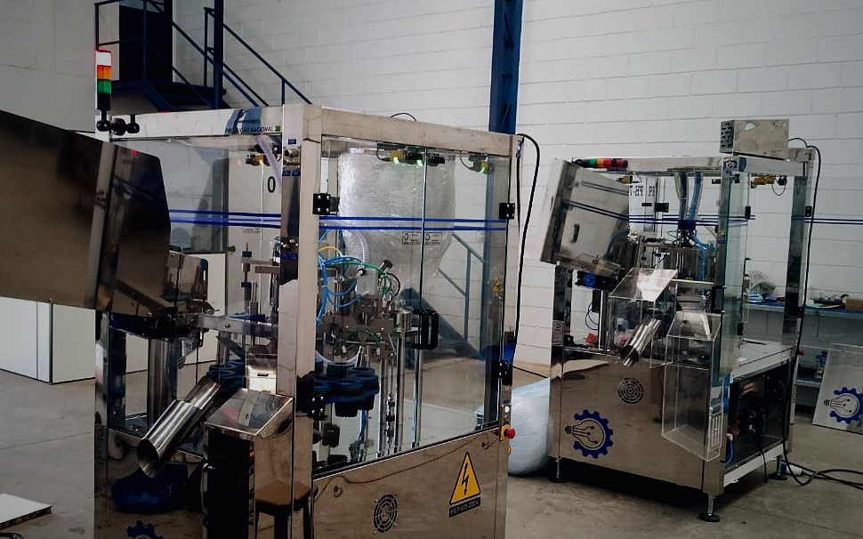
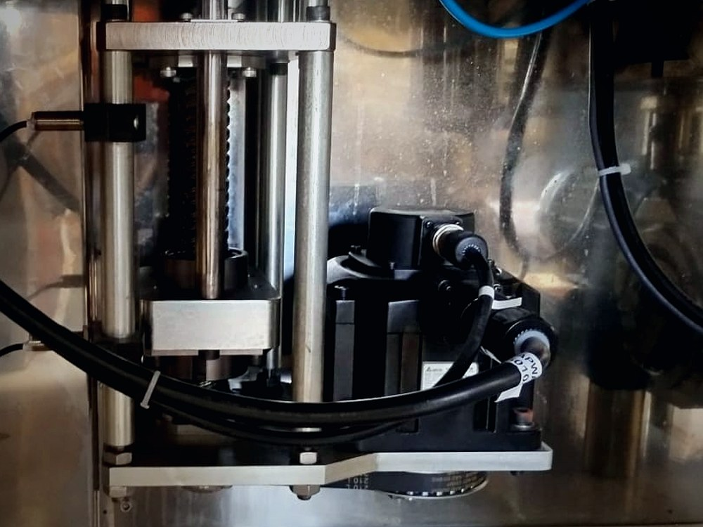

Adequações NR12
Projetos de adequação com foco em segurança operacional, intertravamentos, dispositivos de segurança e conformidade técnica.

Automação e Segurança Industrial
Integração, atualização e desenvolvimento de sistemas industriais para operações mais seguras e eficientes.

A Axion combina conhecimento de máquina, automação, software e rotina operacional para modernizar sistemas industriais sem transformar o projeto em uma troca desnecessária de equipamento.
Serviços
Projetos desenvolvidos com foco em produtividade, confiabilidade operacional, segurança e modernização tecnológica.

Projetos de adequação com foco em segurança operacional, intertravamentos, dispositivos de segurança e conformidade técnica.

Desenvolvimento de software para CLP, IHM, servoacionamentos e integração industrial com foco operacional.

Modernização de máquinas e painéis elétricos utilizando componentes robustos e tecnologias atuais.

Integração de sistemas industriais para maior produtividade, confiabilidade e eficiência operacional.
Suporte técnico recorrente
Para empresas que precisam de acompanhamento técnico contínuo em CLP, IHM, painéis elétricos e modernização de máquinas, sem depender apenas de chamados emergenciais.
8h/mês
Base para manter a rotina técnica acompanhada e reduzir pequenas paradas.
16h/mês
Indicado para operações que precisam de presença técnica mais frequente.
32h/mês
Para empresas que querem uma referência técnica constante na manutenção.
As horas contratadas contemplam trabalho técnico, suporte remoto e tempo de deslocamento relacionado aos atendimentos. Contrato mínimo de 3 meses.
Horas não utilizadas expiram ao final de cada mês. Peças, componentes, reformas completas, adequações NR12 completas e horas excedentes são tratados à parte.
Falar sobre contrato mensalProblemas que resolvemos
A Axion Automação Industrial desenvolve soluções para atualização, segurança e modernização industrial com foco técnico e operacional.
Projetos de adequação NR12, automação, retrofit elétrico e desenvolvimento de software industrial com componentes modernos, integração industrial e foco em produtividade.
Diferenciais
Experiência prática em automação, modernização industrial e fabricação de equipamentos para envase e selagem.
Interfaces intuitivas, integração industrial e sistemas desenvolvidos pensando na rotina operacional.
Aplicação de redes industriais, servos, inversores e componentes robustos para maior confiabilidade.
Projetos desenvolvidos para aumentar desempenho operacional e segurança industrial.
NR12 / NR10
O laudo NR12 enviado traz embasamento em NR 12, NR 10, NBR ISO 12100 e NBR 14153, com avaliação de segurança elétrica, mecânica e operacional.
"Verificação dos sistemas de acionamento e de parada, proteções, monitoramento elétrico e atendimento da legislação federal NR-12."
Trecho sintetizado a partir do laudo técnico NR12/NR10Aplicações reais

Integração entre CLP, IHM, Servo, Ethernet, Modbus e CANopen.
Sistemas de intertravamento, emergência redundante e análise de conformidade.

Atualização tecnológica com foco em produtividade e confiabilidade operacional.
Software industrial
A interface, a lógica de controle e as comunicações industriais precisam facilitar a rotina do operador, a manutenção da máquina e o acompanhamento dos gestores.


Sobre a Axion
A Axion Automação Industrial atua no desenvolvimento e modernização de sistemas industriais, oferecendo soluções em automação, retrofit elétrico, adequações NR12/NR10, painéis elétricos e desenvolvimento de software industrial.
Com mais de 10 anos de experiência no ramo industrial e na fabricação de equipamentos de envase e selagem, os projetos são desenvolvidos com foco em produtividade, confiabilidade, segurança e facilidade de operação.
Contato
Envie o tipo de máquina, painel ou sistema que precisa de atualização. A Axion pode avaliar automação, segurança, retrofit, software e melhorias de operação.
Endereço:
Av. Dom Pedro II, 505 - Atibaia/SP
E-mail:
joao.araujo@axionautomacao.ind.br
WhatsApp:
(11) 98977-4997
Instagram:
@axionautomacaoindustrial